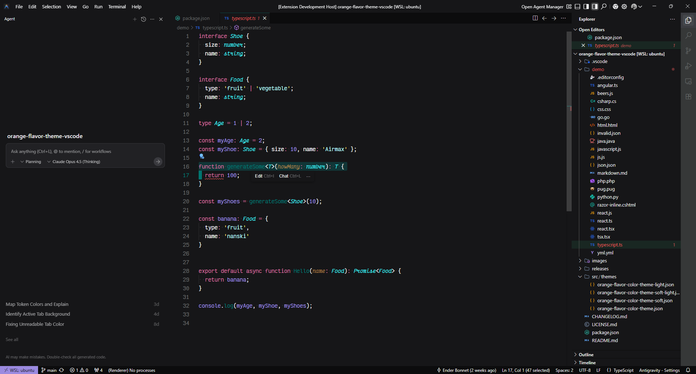

A dark VS Code theme inspired by the Lilo brand palette — teal, gold, and soft violet accents for distraction-free coding.

Lilo Theme delivers vibrant teal-forward syntax with warm accent colors. Lilo Theme (Soft) desaturates bright colors by 20% for reduced eye strain during extended sessions.
Explicit TextMate scoping for 25+ languages including TypeScript, Rust, Go, GraphQL, PHP, and more. See the full language scoping details.
Deep near-black background layers, transparent selections, bracket pair colorization across 6 levels, and soft comment colors keep your eyes focused where it matters.